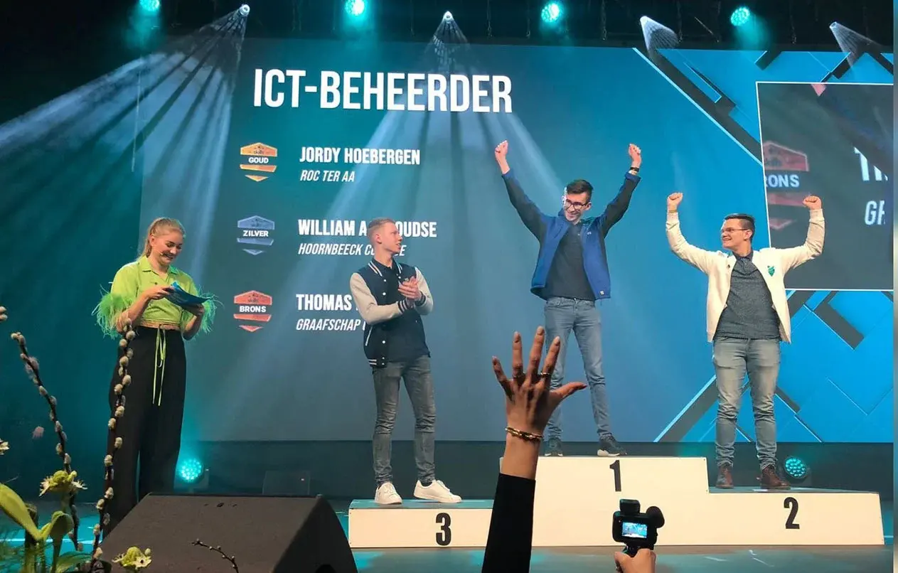

Wie ben ik?
Ik ben Jordy Hoebergen en momenteel ben ik 22 jaar oud. Momenteel ben ik werkzaam bij Advantive als Service Engineer.
Al sinds jonge leeftijd ben ik erg geïnteresseerd in computers en alles wat daar mee te maken heeft. Het begon met simpele dingen zoals wat instellingen aanpassen op mijn computer (waardoor er soms dingen kapot gingen haha), tot wat hardware vervangen. Uiteindelijk ben ik steeds meer gaan leren. Zowel op school als thuis.

Mijn skills
Ik vind het leuk om bezig te zijn met IT en het oplossen van problemen. Ik heb veel ervaring met Microsoft 365, Azure, Windows desktops & servers, Active Directory, Linux desktops & servers, VMware, Cisco switches & routers en Fortinet Firewalls.
Daarnaast vind ik het belangrijk om ervoor te zorgen dat de infrastructuur makkelijk te beheren is met behulp van Infrastructure as Code en automatisering. Hiervoor heb ik ervaring met Git, Ansible, Terraform, PowerShell en diverse andere tools.